Education · Health · Transport · Water · Electricity · Market · Food & Stay
Nayagarh has degree colleges, an engineering institute and schools that go back more than a century.
Founded in 1961, Nayagarh Autonomous College is the best-known degree college of the district headquarters. Its green gateway, with a stone chariot wheel on each side, is one of the town’s familiar landmarks.
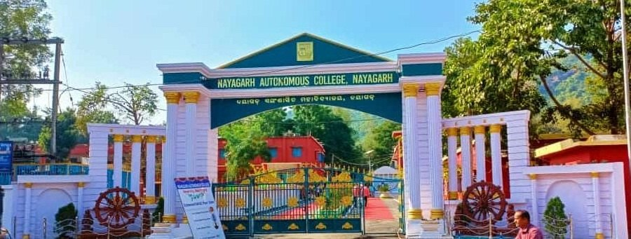
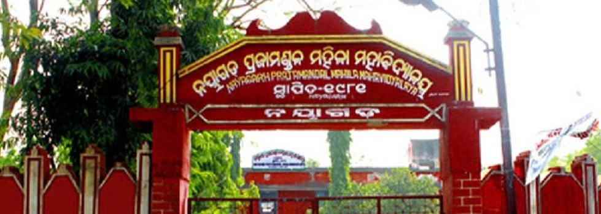
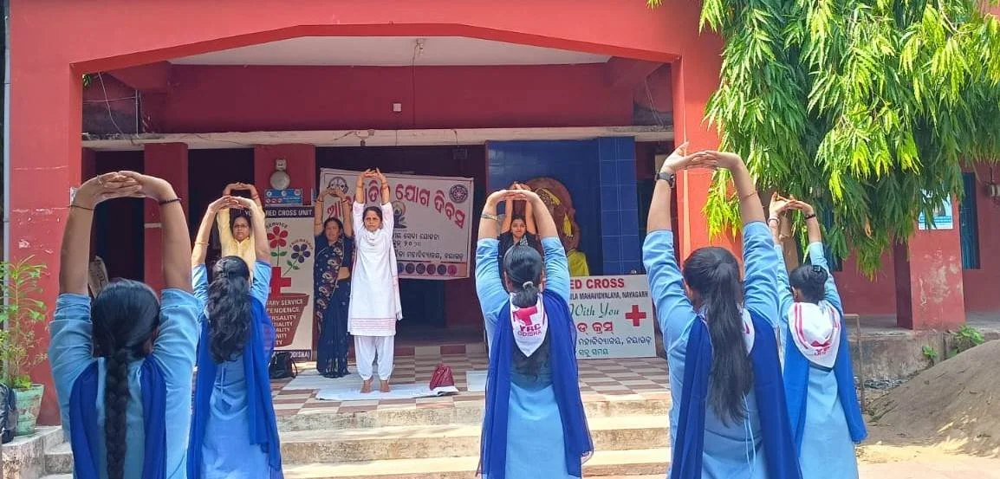
Set up in 1981, this is the town’s women’s college, giving girls from Nayagarh and the villages around it access to higher education close to home. Its name recalls the Prajamandal, the people’s movement of the princely-state era.
The photograph shows students of the college’s Red Cross unit taking part in a Yoga Day programme, one of many activities that run alongside the classroom.
One of the best-known private schools of the town stands behind a red boundary wall and a neat green lawn, its rooftop signboard reading D.A.V. Centenary Public School. It belongs to the D.A.V. (Dayanand Anglo-Vedic) family of schools, which runs schools across India.
For admission, classes, boards and fees, please contact the school directly — those details change every year.
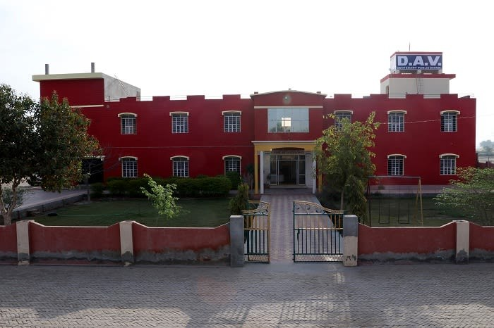
The District Headquarters Hospital (DHH) Nayagarh is the main government hospital of the district. It has a 100-bed mother-and-child health building, a 12-bed newborn care unit (SNCU), a 10-bed nutrition rehabilitation centre, a blood bank and a Jan Aushadhi store for low-cost generic medicines on its campus.
Around it, the district runs 12 Community Health Centres — at Nuagadiasahi, Sarankul, Bhapur, Mahipur, Rajsunakhala, Gania, Badapandusar, Madhyakhanda, Dasapalla, Ranpur, Odagaon and Khandapada — plus 166 sub-centres and the BMSN TB Hospital at Chandapur. Patients who need advanced care are usually referred on to Bhubaneswar or Cuttack.
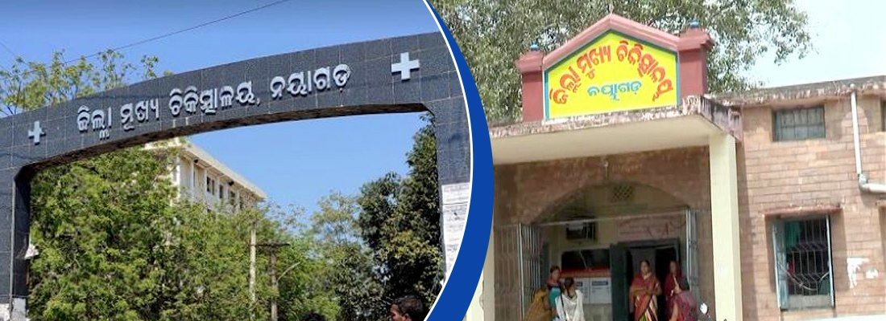
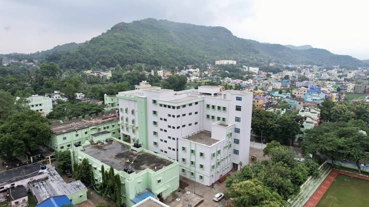
Phone numbers come from public government listings and can change — please confirm before relying on them.
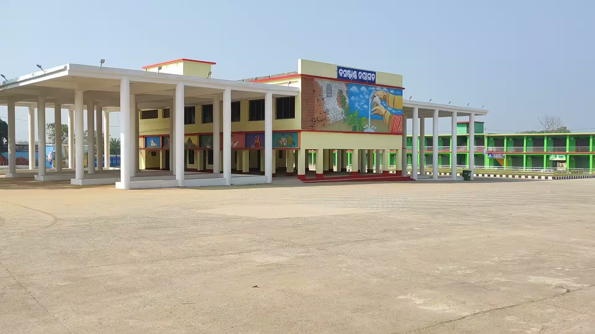
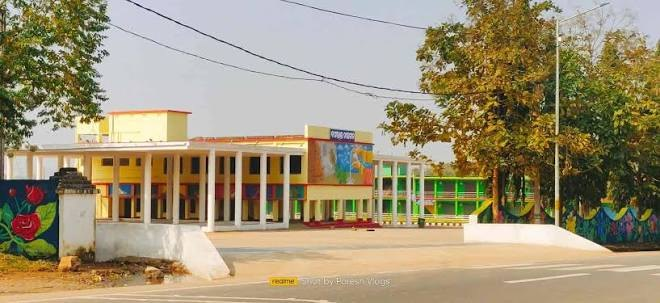
Nayagarh is about 87 km from Bhubaneswar by road, on National Highway 57, which links coastal Odisha with the west of the state. SH-1 runs from Phulbani through Nayagarh to Khurda, SH-21 connects Nayagarh with Odagaon and Laukhal, and the 96-km New Jagannath Sadak joins the district to Puri. Regular buses run from Bhubaneswar, Balangir and other towns.
The new bus stand was built to ease traffic at the old one and was scheduled to open on 2 April 2021, with shops for passengers. Its walls carry colourful murals of village life.
For short trips, cycle rickshaws, autos and e-rickshaws are everywhere, and the Ama Bus service links villages with towns. Private taxis and trekkers run across the district.
Nayagarh Town railway station opened in June 2017 on the Khurda Road–Balangir line. It has four platforms, was electrified in 2021 and is served by passenger and MEMU trains to Khurda Road, about 69 km away. The longer line towards Balangir is still being built.
There is no airport in the district. The nearest is Biju Patnaik International Airport in Bhubaneswar, roughly 87 km (about two hours) away.
The piped water for Nayagarh town comes from the Mahanadi river. A mega drinking-water scheme near Kantilo pumps water from the river, and a pipeline of about 30 km carries it to the town, which is governed by a municipality with 13 wards.
Reports in 2019 described cracks, leaks and low pressure in the old pipeline, so supply has not always been reliable. Because the situation changes, residents and visitors should check with the local water-supply office or the municipality for the current position.
Electricity in Nayagarh is distributed by TP Central Odisha Distribution Limited (TPCODL), a joint venture of Tata Power and the Odisha government, through its Nayagarh Electrical Division. TPCODL also serves Bhubaneswar, Cuttack, Puri, Dhenkanal, Angul and Kendrapara.
To report a power cut, call the 24-hour support line and press 1 for “no power supply”, or use the TPCODL Mitra app.
Contact details are taken from published listings of the company; please verify them on the official website.
Trade in Nayagarh is spread across several towns. Itamati, about 6 km from Nayagarh, is the district’s main trading centre, Rajsunakhala (about 26 km away) is the second biggest, and Daspalla is the fourth-largest business hub.
Local specialities make good souvenirs. The best Chhena Poda comes from Itamati and Machhipada, and the district’s Nayagarh Kanteimundi Brinjal received a Geographical Indication (GI) tag in January 2024.
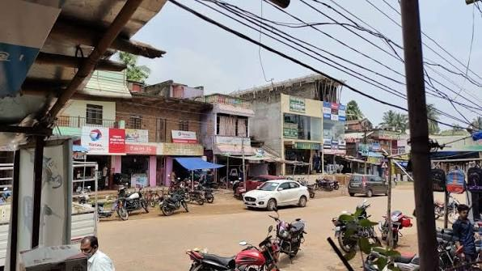
A market street in Nayagarh town — shops and signboards on both sides, with motorbikes parked along the road.Information compiled from district government pages, Wikipedia and local news reports. Please check timings, numbers and details locally.
Nayagarh’s eating places range from open-air garden dining to air-conditioned family restaurants, and its sweet shops are never far away.
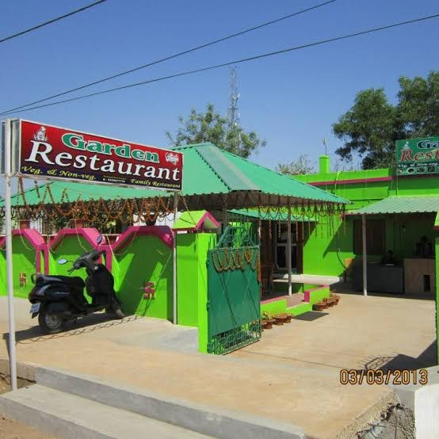
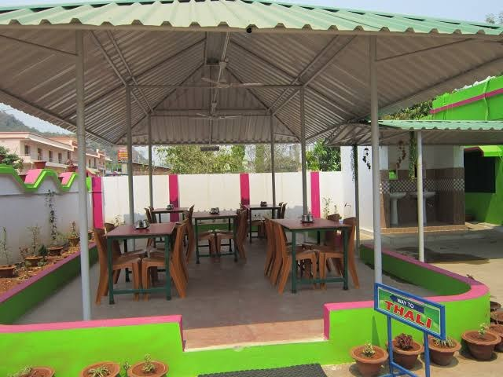
Garden Restaurant is a bright green and pink family restaurant serving veg and non-veg food. Guests sit under a covered, open-air pavilion with wooden chairs, potted plants and a view of the hills, and a signboard points the way to the thali — the classic Odia rice meal.
The first photograph carries a 2013 date stamp, so the building’s colours may have changed since.
Signature is an air-conditioned family restaurant with a smart dark-and-green entrance decked with marigold-style garlands. Inside, hanging creepers and warm orange walls set the mood, and a chalkboard announces a “Special Menu for Today” — the day we saw it listed Murg Champ, Lemon Pepper Chicken and Jumbo Prawn.
Specials change daily, so ask at the counter for the menu of the day.
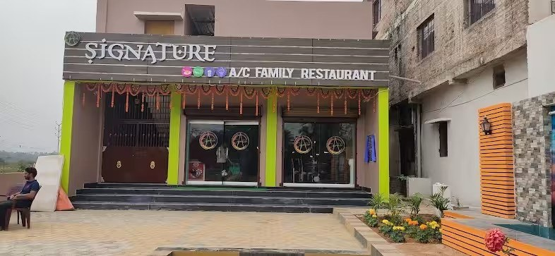
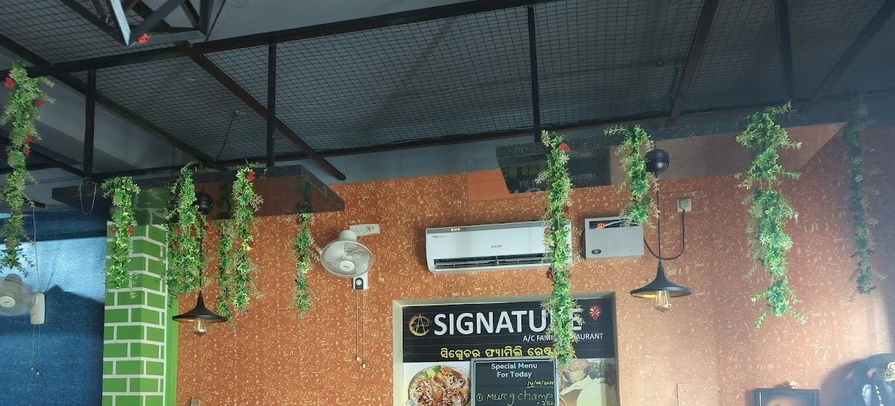
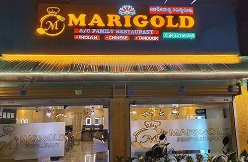
Marigold is an air-conditioned family restaurant whose glowing signboard advertises Indian, Chinese and Tandoor food. Its glass front opens into a softly lit dining hall.
The phone number printed on the signboard is 94381 60260 — please call to confirm timings before you go.
Under a bright red signboard, the glass counter of Shreeram Sweets is stacked tray upon tray with laddus, pedas, barfis, rasgullas and gulab jamuns in every colour. It is a good stop for festival boxes and for a quick sweet after a temple visit.
Looking for Nayagarh’s own speciality? Read about Chhena Poda, which is best bought fresh in Nayagarh town, Itamati and Daspalla.
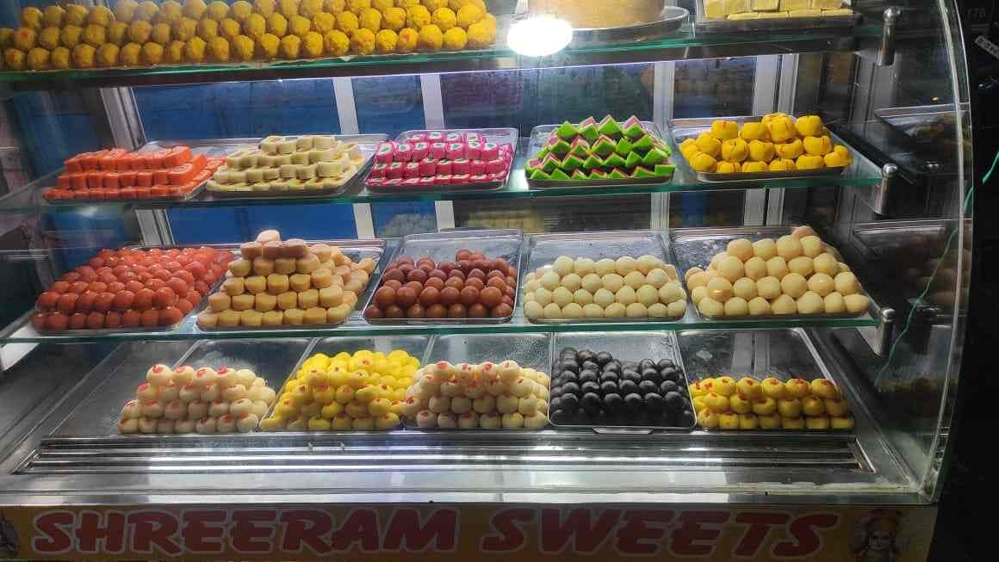
Nayagarh town has simple lodges near the main road and bus stand. Visitors who want a wider choice of hotels usually stay in Bhubaneswar, about 87 km away, and travel to Nayagarh by road for the day.
Restaurant names, photographs and details were collected locally. Menus, prices, timings and phone numbers change often — please confirm before you visit.